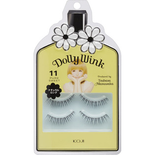

返回列表
产品名称：ドーリーウインク アイラッシュ No．11 ピュアスイート

コージー本舗 ドーリーウインク アイラッシュ No．11 ピュアスイート ＿
メーカー コージー本舗
JANコード 4972915031119
商品の特徴
ナチュラルな束感のぱっちり系つけまつげです。中央の毛束を濃くしているので、さりげなく、黒目がちでまん丸な瞳を演出します。
○透明ベース
○２ペア入りのバリューパック
益若つばさプロデュース。
成分・分量
【主成分】
○専用接着剤
天然ゴムラテックス
用法及び用量
ピンセットや毛抜きなどでアイラッシュの目尻側の根元をつまみ、アイラッシュを傷めないようにケースから静かにはずします。